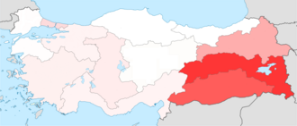
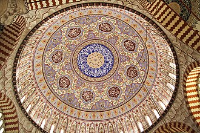
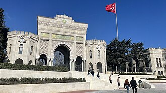

Demographics
According to the Address-Based Population Recording System, the country's population was 85,372,377 in 2023, excluding Syrians under temporary protection. 93% lived in province and district centers. People within the 15–64 and 0–14 age groups corresponded to 68.3% and 21.4% of the total population, respectively. Those aged 65 years or older made up 10.2%. Between 1950 and 2020, Turkey's population more than quadrupled from 20.9 million to 83.6 million; however, the population growth rate was 0.1% in 2023. In 2023, the total fertility rate was 1.51 children per woman, below the replacement rate of 2.10 per woman. In a 2018 health survey, the ideal children number was 2.8 children per woman, rising to 3 per married woman.
Ethnicity and language
Article 66 of the Turkish Constitution defines a Turk as anyone who is a citizen. It is estimated that there are at least 47 ethnic groups represented in Turkey. Reliable data on the ethnic mix of the population is not available because census figures do not include statistics on ethnicity after the 1965 Turkish census. According to the World Factbook, 70-75% of the country's citizens are ethnic Turks. Based on a survey, KONDA's estimation was 76% in 2006, with 78% of adult citizens self-identifying their ethnic background as Turk. In 2021, 77% of adult citizens identified as such in a survey.
Kurds are the largest ethnic minority. Their exact numbers remain disputed, with estimates ranging from 12 to 20% of the population. According to a 1990 study, Kurds made up around 12% of the population. The Kurds make up a majority in the provinces of Ağrı, Batman, Bingöl, Bitlis, Diyarbakır, Hakkari, Iğdır, Mardin, Muş, Siirt, Şırnak, Tunceli and Van; a near majority in Şanlıurfa (47%); and a large minority in Kars (20%). In addition, internal migration has resulted in Kurdish diaspora communities in all of the major cities in central and western Turkey. In Istanbul, there are an estimated three million Kurds, making it the city with the largest Kurdish population in the world. 19% of adult citizens identified as ethnic Kurds in a survey in 2021. Some people have multiple ethnic identities, such as both Turk and Kurd. In 2006, an estimated 2.7 million ethnic Turks and Kurds were related from interethnic marriages.
According to the World Factbook, non-Kurdish ethnic minorities are 7–12% of the population. In 2006, KONDA estimated that non-Kurdish and non-Zaza ethnic minorities constituted 8.2% of the population; these were people that gave general descriptions such as Turkish citizen, people with other Turkic backgrounds, Arabs, and others. In 2021, 4% of adult citizens identified as non-ethnic Turk or non-ethnic Kurd in a survey. According to the Constitutional Court, there are only four officially recognized minorities in Turkey: the three non-Muslim minorities recognized in the Treaty of Lausanne (Armenians, Greeks, and Jews) and the Bulgarians. In 2013, the Ankara 13th Circuit Administrative Court ruled that the minority provisions of the Lausanne Treaty should also apply to Assyrians in Turkey and the Syriac language. Other unrecognized ethnic groups include Albanians, Bosniaks, Circassians, Georgians, Laz, Pomaks, and Roma.
The official language is Turkish, which is the most widely spoken Turkic language in the world. It is spoken by 85% to 90% of the population as a first language. Kurdish speakers are the largest linguistic minority. A survey estimated 13% of the population speak Kurdish or Zaza as a first language. Other minority languages include Arabic, Caucasian languages, and Gagauz. The linguistic rights of the officially recognized minorities are de jure recognized and protected for Armenian, Bulgarian, Greek, Hebrew, and Syriac. There are multiple endangered languages in Turkey.
Largest cities or towns in Turkey
| Rank | Name | Municipal pop. | Rank | Name | Pop. |
|---|---|---|---|---|---|
| 1 | Istanbul | 15,655,924 | 6 | Konya | 2,320,241 |
| 2 | Ankara | 5,803,482 | 7 | Adana | 2,270,298 |
| 3 | Izmir | 4,479,525 | 8 | Şanlıurfa | 2,213,964 |
| 4 | Bursa | 3,214,571 | 9 | Gaziantep | 2,164,134 |
| 5 | Antalya | 2,696,249 | 10 | Kocaeli | 2,102,907 |
Immigration
Excluding Syrians under temporary protection, there were 1,570,543 foreign citizens in Turkey in 2023. Millions of Kurds fled across the mountains to Turkey and the Kurdish areas of Iran during the Gulf War in 1991. Turkey's migrant crisis in the 2010s and early 2020s resulted in the influx of millions of refugees and immigrants. Turkey hosts the largest number of refugees in the world as of April 2020. The Disaster and Emergency Management Presidency manages the refugee crisis in Turkey. Before the start of the Syrian civil war in 2011, the estimated number of Arabs in Turkey varied from 1 million to more than 2 million.
In November 2020, there were 3.6 million Syrian refugees in Turkey; these included other ethnic groups of Syria, such as Syrian Kurds and Syrian Turkmens. As of August 2023, the number these refugees was estimated to be 3.3 million. The number of Syrians had decreased by about 200,000 people since the beginning of the year. The government has granted citizenship to 238 thousand Syrians by November 2023. As of May 2023, approximately 96,000 Ukrainian refugees of the 2022 Russian invasion of Ukraine have sought refuge in Turkey. In 2022, nearly 100,000 Russian citizens migrated to Turkey, becoming the first in the list of foreigners who moved to Turkey, meaning an increase of more than 218% from 2021.
Religion
Turkey is a secular state with no official state religion; the constitution provides for freedom of religion and conscience. According to the the World Factbook, Muslims constitute 99.8% of the population, most of them being Sunni. Based on a survey, KONDA's estimate for Muslims was 99.4% in 2006.[456] According to Minority Rights Group International, estimates of share of Alevi are between 10% to 40% of the population.[457] KONDA's estimate was 5% in 2006.[458] 4% of adult citizens identified as Alevi in a survey in 2021, while 88% identified as Sunni.
The percentage of non-Muslims in modern-day Turkey was 19.1% in 1914. Currently, non-Muslims constitute 0.2% of the population according to the World Factbook. In 2006, KONDA's estimate was 0.18% for people with non-Islam religions. Some of the non-Muslim communities are Armenians, Assyrians, Bulgarian Orthodox, Catholics, Chaldeans, Greeks, Jews, and Protestants. Turkey has the largest Jewish community among the Muslim-majority countries. Currently, there are 439 churches and synagogues in Turkey.
In 2006, KONDA's estimate was 0.47% for those with no religion. According to KONDA, share of adult citizens who identified as unbeliever increased from 2% in 2011 to 6% in 2021. A 2020 Gezici Araştırma poll found that 28.5% of the Generation Z identify as irreligious.
Education
The Ministry of National Education is responsible for pre-tertiary education. This is compulsory and lasts twelve years: four years each for primary school, middle school and high school. All 12 years of compulsory education is free of charge in public schools. Basic education is said to lag behind other OECD countries, with significant differences between high and low performers. Access to a high-quality school heavily depends on the performance in the secondary school entrance exams, to the point that some students begin taking private tutoring classes when they are ten years old.
There are 209 universities in Turkey. Except for the Open Education Faculties at Anadolu, Istanbul and Atatürk universities, entrance is regulated by the national Student Selection and Placement System (Turkish: Öğrenci Seçme ve Yerleştirme Sistemi, ÖSYS) examination, after which high school graduates are assigned to universities according to their performance. According to the 2012–2013 Times Higher Education World University Rankings, the top university was the Middle East Technical University, followed by Bilkent University, Koç University, Istanbul Technical University and Boğaziçi University. All state and private universities are under the control of the Higher Education Board (Turkish: Yükseköğretim Kurulu, YÖK). Since 2016, the president of Turkey directly appoints all rectors of all state and private universities.
Turkey is a member of the Socrates programme, Erasmus Programme and Erasmus+ Programmes. Turkey is also a member of the Erasmus Student Network, a student organization with more than 15,000 volunteers across Europe. Turkey has become a hub for foreign students in recent years, with 795,962 foreign students in 2016. The government has announced a plan to draw around 500,000 foreign students at its universities by offering attractive scholarships. In 2021 Türkiye Scholarships, a government-funded program, received 165,000 applications from prospective students in 178 countries.
Health
The Ministry of Health has run a universal public healthcare system since 2003. Known as Universal Health Insurance (Genel Sağlık Sigortası), it is funded by a tax surcharge on employers, currently at 5%. Public-sector funding covers approximately 75.2% of health expenditures. Despite the universal health care, total expenditure on health as a share of GDP in 2018 was the lowest among OECD countries at 6.3% of GDP, compared to the OECD average of 9.3%. The lower health care expenditure is due to lower median age in Turkey which is 32.4, compared to Italy which is 47.3. Aging population is the prime reason for higher healthcare expenditure in the developed world.
Average life expectancy is 78.6 years (75.9 for males and 81.3 for females), compared with the EU average of 81 years. Turkey has high rates of obesity, with 29.5% of its adult population having a body mass index (BMI) value of 30 or above. Air pollution is a major cause of early death.
There are many private hospitals in the country. Medical tourism generated revenues of more than $1 billion in 2019. Around 60% of the income has been obtained from plastic surgery and a total of 662,087 patients received service in the country within the scope of health tourism in 2019.